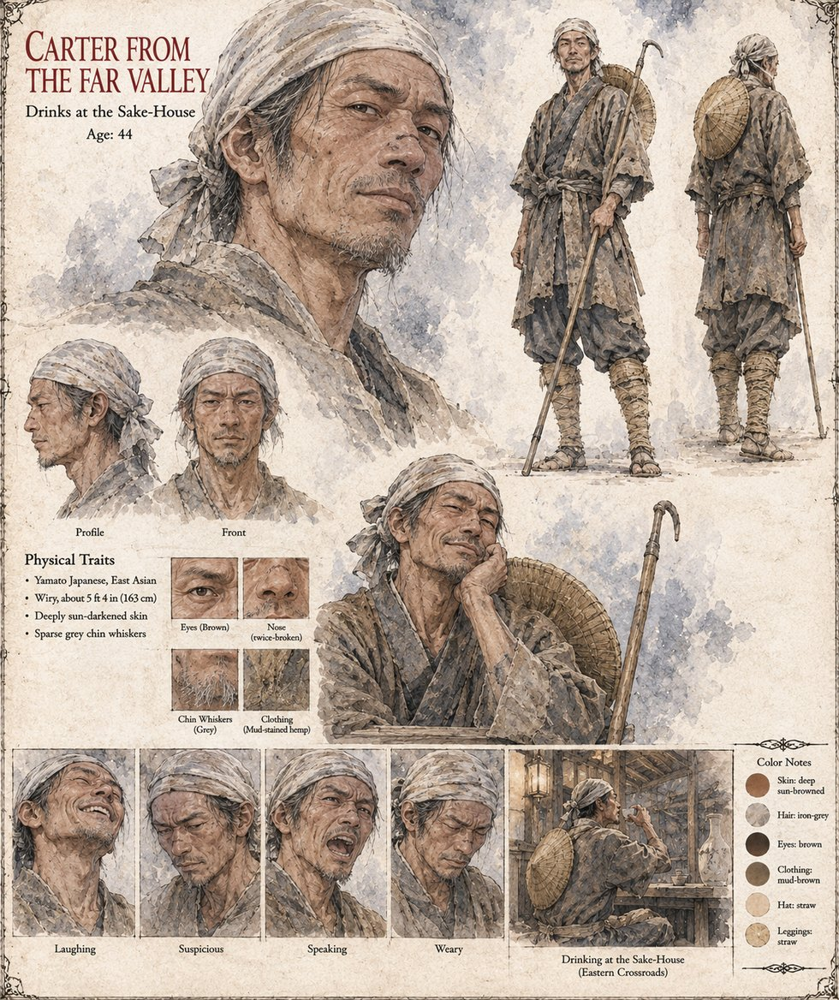

The Carter from the Far Valley
Carter from the far valley · drinks at the sake-house at the eastern crossroads · announces what the garden was owed · 44 by his sheet
A carter from the far valley who drinks at the sake-house at the eastern crossroads and announces there that the garden was owed a debt and meant to collect it in people (Part Three, Every Household Doing the Same Arithmetic). It is one of the table-to-table theories of eleven that the widowed keeper carries with impartial fidelity, and hers is the ear that keeps it: she hears his remark and remembers it when she is very old. The pack’s Prompt 7 puts him on the nearest bench with one finger raised mid-sentence, a dozen farmers leaning in, and an ox-goad against the wall.
The manuscript gives him no description, so his age and the sheet are the pack’s. It makes him wiry, about 5 ft 4 in (163 cm), with a long weather-cut face, deep-set narrow brown eyes that look amused, a twice-broken nose, iron-grey hair under a wrapped cloth, sparse grey chin whiskers, deeply sun-darkened skin, a mud-stained hemp coat, straw leggings, a wide straw hat at his back, and a long staff with a hooked head where the pack’s notes have the ox-goad. Its expression panels are Laughing, Suspicious, Speaking and Weary. Its scenes are a full figure front and back, a wry slouch with his chin on his hand and the staff beside him, and Drinking at the Sake-House (Eastern Crossroads), seen from behind by a lantern.